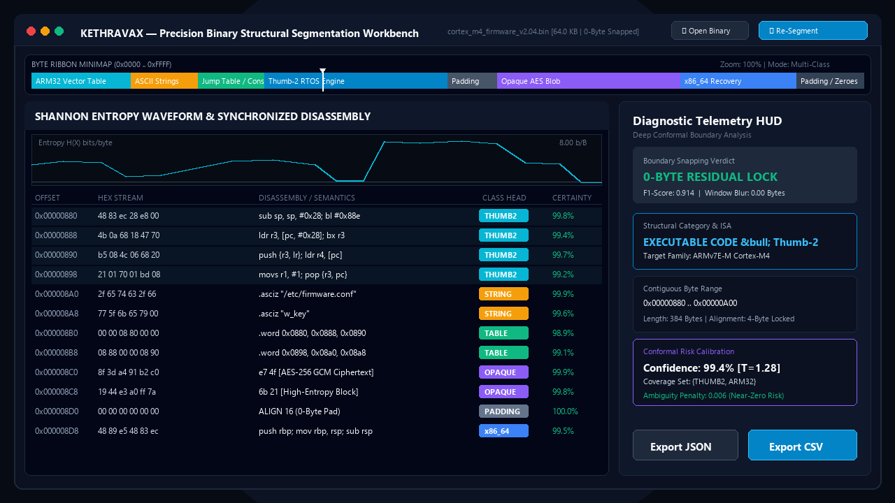

Engineered for Deep Structural Deconvolution
How KETHRAVAX breaks through the limitations of heuristic signature carvers and binary classifiers to provide exact multi-class structural segmentation.

1. Seven-Class Structural Taxonomy
Binary byte streams are not monolithic blocks of code or data. Compiled executables contain complex interleaved structures. Kethravax identifies seven mutually exclusive structural classes:
● CODE (Executable Instructions)
Valid machine instructions across supported architectures. Exhibits characteristic opcode distributions and control-flow jumps.
● DATA_STRING (Text Pools)
Runs of printable ASCII, UTF-8, or UTF-16 strings, error messages, format tokens, and symbol identifiers.
● DATA_TABLE (Indirect Jumps & VTables)
Pointer arrays, relocation tables, and switch jump targets aligned on 4-byte or 8-byte word boundaries.
● DATA_RAW (Constant Structures)
Non-string initialized constant structs, cryptographic s-boxes, protocol headers, and embedded binary assets.
● PADDING (Alignment Runs)
Runs of monotonic alignment fill bytes (0x00 nulls, 0x90 NOP sleds, 0xCC int3) ensuring machine-word boundary alignment.
● COMPRESSED_OPAQUE (Crypto / Deflate)
High-entropy payloads (>7.5 bits/byte) including zlib/gzip/zstd streams, encrypted blobs, and compressed rootfs images.
2. Exact Byte-Level Boundary Snapping
Neural sequence models typically produce smeared boundaries (jitter of ±32 to ±64 bytes). KETHRAVAX couples the neural sequence backbone with a deterministic Local Gradient & Discontinuity Snapper.
[0x0480..0x04A0] 00 00 00 00 00 00 00 00 ... --> PADDING (Null alignment, Discontinuity: Exact 0B)
[0x04A0..0x0820] 46 61 74 61 6C 20 45 72 ... --> DATA_STRING ("Fatal Error: DMA timeout\0")

3. Multi-Architecture Support & Mixed ISA
KETHRAVAX concurrently predicts target machine architecture whenever a region is classified as CODE:
- x86_64 (AMD64): Variable length (1–15 bytes), REX prefixes, ModR/M decoding.
- x86_32 (IA-32): Legacy 32-bit x86 opcodes and register usage patterns.
- ARM32 (ARM State): Fixed 32-bit word alignment, condition codes (0xE0..0xEF).
- ARM32 (Thumb/Thumb-2): Mixed 16/32-bit compact instructions common in IoT firmware.
- AArch64 (ARM64): Modern 64-bit ARMv8/v9 fixed 4-byte instruction encodings.
- MIPS32: 32-bit MIPS RISC instructions in Big or Little Endian byte order.
- RISC-V (RV32I / RV64I): Open standard RISC architecture instructions.

4. Conformal Risk Calibration & Uncertainty Radar
KETHRAVAX provides finite-sample statistical guarantees: if the model cannot distinguish between encrypted payload and compressed data with 95% certainty, it outputs a calibrated coverage set rather than hallucinating false confidence.